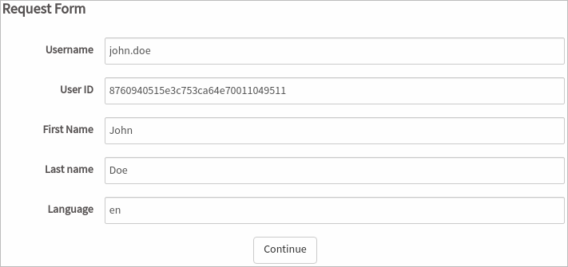

Environment Helpers
PMDynaform.getUserInfo()
The PMDynaform.getUserInfo() method retrieves an object with logged on user information.
Parameters:
- This function does not need a parameter.
Return Value:
-
object: This object has the following string-type properties:
- uid: The user's unique ID.
- username: The username, which is unique.
- firstName: The user's first name.
- lastName: The user's last name.
- language: The system's language.
Example 1:
ProcessMaker Web Edition:

Example 2:
$("#username").setValue(user.username);
$("#uid").setValue(user.uid);
$("#firstName").setValue(user.firstName);
$("#lastName").setValue(user.lastName);
$("#language").setValue(user.language);
ProcessMaker Web Edition:
PMDynaform.getEnvironment()
The PMDynaform.getEnvironment() method retrieves the environment where the Dynaform is executed.
Parameters:
- This function does not need a parameter.
Return Value:
- string: If running the Dynaform on the ProcessMaker Web Edition, the return value will be the user agent. If running the Dynaform on ProcessMaker Mobile, the return Value will be "iOS" or "android" according to the device.
Example 1:
ProcessMaker Web Edition:

ProcessMaker Mobile:

Example 2:
When the following JavaScript code is executed, the function will return a different message depending on the environment that the Dynaform is running on.
if ($var.indexOf("android") >= 0) {
alert("Hello user, welcome to ProcessMaker MOBILE App");
}
else {
alert("Hello user, welcome to ProcessMaker WEB Version");
}
ProcessMaker Web Edition:

ProcessMaker Mobile:

PMDynaform.getWorkspaceName()
The PMDynaform.getWorkspaceName() retrieves the workspace name, which is "workflow" by default. This method is useful when running a Dynaform on ProcessMaker Mobile where the workspace name is not shown in the URL.
Parameters:
- This function does not need a parameter.
Return Value:
- string: It returns the workspace name as a string value.
Example:
ProcessMaker Web Edition:
ProcessMaker Mobile:

PMDynaform.getAccessToken()
PMDynaform.getAccessToken() retrieves the current user's REST login session access token. Information about the access token value can be reviewed in the wf_<workspace>.OAUTH_ACCESS_TOKENS table.
Parameters:
- This function does not need a parameter.
Return value:
- string: It returns the access token as a string value.
Example:
ProcessMaker Web Edition:

ProcessMaker Mobile:

PMDynaform.getHostName()
PMDynaform.getHostName() retrieves the hostname of the server where ProcessMaker is installed. This method is especially useful in ProcessMaker Mobile where the hostname is not obtainable from the URL.
Parameters:
- This function does not need a parameter.
Return value:
- string: It returns the hostname and protocol as a string value.
Example:
ProcessMaker Web Edition:

ProcessMaker Mobile:

Consuming a REST Endpoint Using jQuery
When creating a ProcessMaker REST API, it is necessary to first obtain an access token from OAuth 2.0 to call ProcessMaker REST endpoints.
However, ProcessMaker also uses access tokens to consume its own services. It is possible to consume a REST endpoint from inside ProcessMaker using these same access tokens with the help of the Environment Helpers, as long as the tokens stay active.
To consume a REST enpoint from inside ProcessMaker, the code should include:
- A well-defined endpoint URL that represents the resource (check out how to call ProcessMaker endpoints for: Administration, Designer, Cases).
- The access token retrieved by the PMDynaform.getAccessToken() helper placed in the request header.
- A valid HTTP method, used to perform actions on that resource (GET, POST, PUT, and DELETE).
- And, the ability to access representations of the result data (JSON).
Example 1:
The example below explains how to retrieve the existing roles from the current workspace using a REST endpoint.
Create a Dynaform with a "roles" text area and a "getRoles" button.

The endpoint URL to retrieve all the roles in a current workspace is:
host/api/1.0/workspace/roles To set this URL, the following code uses the helpers PMDynaform.getHostName(), PMDynaform.getWorkspaceName() and PMDynaform.getAccessToken() to get the hostname, workspace and access token respectively.
Place the code in the javascript property of the Dynaform.
var host = PMDynaform.getHostName(); // get the hostname
var ws = PMDynaform.getWorkspaceName(); // get the current workspace
var token = PMDynaform.getAccessToken(); // get the access Token
function getRoles() {
$.ajax({
url: host+"/api/1.0/"+ws+"/roles", // endpoint URL
// GET requests do not send parameters, but POST and PUT can set their data here:
data: {},
type: "GET",
// Header with the access token:
beforeSend: function(xhr) {
xhr.setRequestHeader('Authorization', 'Bearer '+token);
},
success: function(roles) {
var list = ""; // empty array created to store the return data
for (i=0; i < roles.length; i++) { // return an array of information about roles
list += roles[i].rol_name; // filter the .rol_name
list += "\n"; // concatenate with newline
}
$("#roles").setValue(list); // set the information in the text area
}
});
}
$("#getRolesBtn").find('button').click(getRoles);-
When clicking the "Get Roles" button, the JavaScript code will retrieve all the roles in the current workspace and it will set the role list in the "roles" text area.

Example 2:
If a REST endpoint doesn't send back any response when it is successfully executed, then jQuery's .ajax() function takes that empty response and tries to call JSON.parse() on an empty string, which causes an error message like:
To avoid this problem, set dataType: "text", which is tells jQuery.ajax() that the endpoint will return text, so it shouldn't call JSON.parse(). If the endpoint is successful, then do nothing. If it is unsuccessful and it has returned a responseText, then call JSON.parse() to get the error object.
For example the following JavaScript code executes the PUT /cases/{app_uid}/execute-trigger/{tri_uid} endpoint which doesn't return a response if it is executed successfully. Notice how the code sets a handler function for errors.
var ws = PMDynaform.getWorkspaceName(); // get the current workspace
var token = PMDynaform.getAccessToken(); // get the access Token
var app_uid = frames.app_uid ? frames.app_uid : ''; // get the case ID
var trig_uid = "61048893559a5d178ac62a10846078482"; // set to the ID of the trigger
$("#callRestButton").find("button").click(function(){
if (app_uid) {
$.ajax({
url: host+"/api/1.0/"+ws+"/cases/"+app_uid+"/execute-trigger/"+trig_uid, // REST endpoint
//uncomment if needing to send POST parameters:
//data: JSON.stringify( {param1: "value1", param2: "value2"} ),
type: "PUT",
contentType: "application/json",
dataType: 'text',
beforeSend: function(xhr) {
xhr.setRequestHeader('Authorization', 'Bearer '+token); // Header with access token
},
success: function(xhr, status, error) {
alert("Success" + (xhr.responseText ? ": "+xhr.responseText: ''));
},
error: function(xhr, status, error) {
if (xhr.responseText) {
oResponse = JSON.parse(xhr.responseText);
alert(oResponse.error.message)
} else {
alert("Error: " + error);
}
}
});
}
});